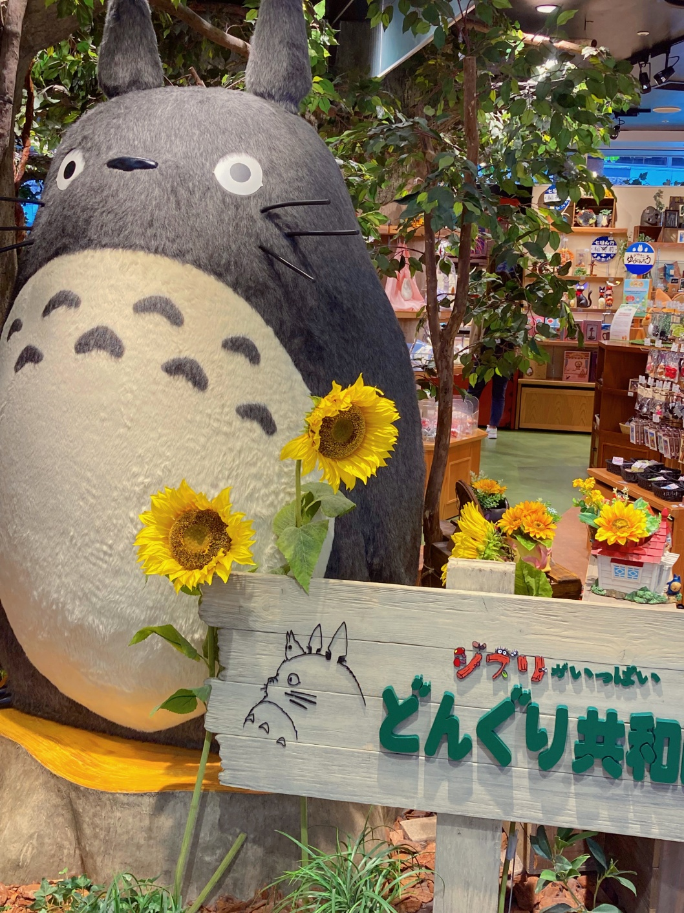
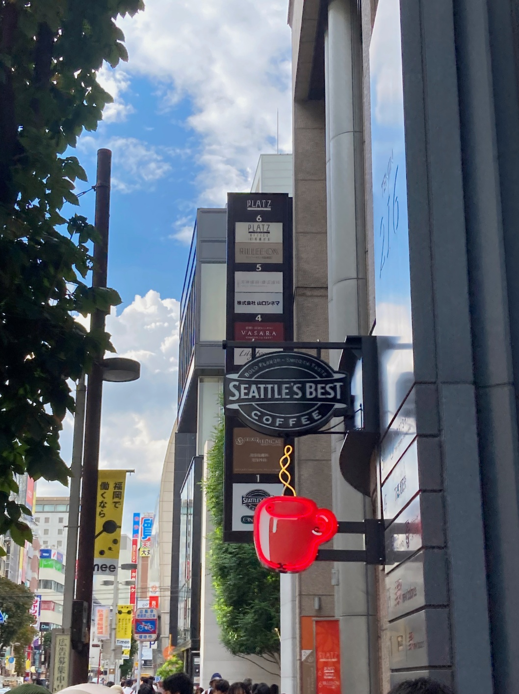

보통 일과 학업에 지치고 마음이 힘들면 사람들은 여행을 떠납니다. 학교를 졸업하거나 퇴사, 이직 시기에 기분을 환기시키고 힐링하는 느낌으로 여행을 계획하기도 하죠. 대학생이라면 단연, 방학 기간을 활용해 여행을 다니기 바쁩니다. 하지만 제게 이번 방학은 조금 달랐는데요. 방학동안 일과 공부에 매진하느라 시간적 여유가 없었습니다. 그래서 당연히 이대로 개강을 하고 2학기를 시작하겠구나 싶었죠.
그런데 어느 날 밤 “이대로 2학기를 맞을 수는 없어”라는 생각이 들었습니다. 분명 또 쳇바퀴 같은 일상을 살아갈 텐데 스트레스를 확실하게 풀 방법이 필요하다고 느꼈죠. 그래서 개강 2주 전 급히 비행기 표를 구매했는데요. 도착지는 짧은 일정으로 부담없이 다녀올 수 있는 일본이었습니다. 영어권 국가만 가봤기에 어떻게 소통하면 좋을지 짧은 일본어 회화를 영상으로 들으며 익히기도 했죠.
기존의 여행 스타일은 장기간, 널널한 스케줄, 관광지보다는 그 나라와 지역의 분위기 즐기기였습니다. 하지만 이번에는 짧은 일정이다 보니 조금 잘 즐겨보자라는 생각이 들었죠. 덕분에 핫 플레이스로 여겨지는 장소들 위주로 핵심을 간추린 버전을 여행을 하게 되었는데요.
쇼핑도 많이 하고 색다른 음식도 먹고 즐기며 제대로 스트레스를 해소하고 돌아왔습니다. 이런 스타일의 여행도 나름의 장점이 있고 리프레쉬하는 시도에는 아주 효과적이었죠. 겨울 방학에도 관광이 활성화되어 있는 여행지에 다녀오면 좋겠다는 생각이 들었습니다.
삶이 지치지 않기 위해서는 끊임없이 시도해야 하는지도 모르겠습니다. 일이나 공부 외에도 무엇을 할 때 내가 가장 즐거운지, 어떤 걸 좀 잘하고 어떤 건 좀 못하는지 알아 보기에 위해서는 시도해 보기 전에 결코 알 수 없죠. 고등학교 입시 내내 줄곧 이런 생각에 시달리곤 했습니다. 좋은 대학, 좋은 직장, 번듯한 생활, K-장녀로 먼저 길을 잘 닦아 놔야 동생이 잘 따라올 수 있다는 부담감. 이것들은 늘 마음 한 편에 자리했고 시간을 낭비하는 게 큰 잘못 같았습니다.
그래서 필요한 공부, 유의미한 활동을 하는 것만 옳다고 생각하기도 했고요. 하지만 요즘은 100세 시대잖아요? 지금은 컴퓨터가 재밌을 수도 있고 몇 년 후에는 베이킹이 흥미로울 지도 모를 일입니다. 딱 하나만 목표로 삼고 달려 나가기에는 위험 부담이 큰 세상이 되었고요. 그래서 이제는 뭐든 시도해 보려고 합니다. 안 가본 여행지, 처음 뱉어보는 낯선 나라의 단어, 작동법도 채 모르던 오래된 카메라를 만지는 일 모두 뜻깊은 기억을 선물해 줬으니까요.
여러분들도 새로운 시도들과 취미를 통해서 또 다른 나를 발견하는 순간이 꼭 왔으면 좋겠습니다.
글 읽어주셔서 감사합니다.